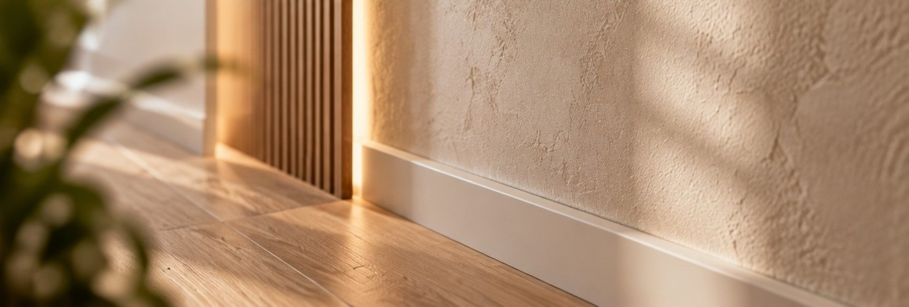
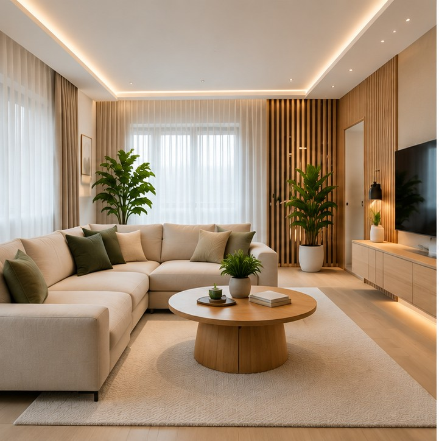
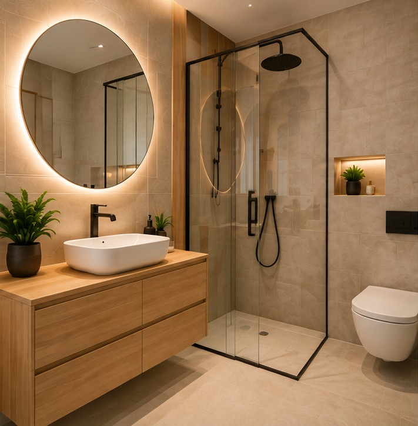
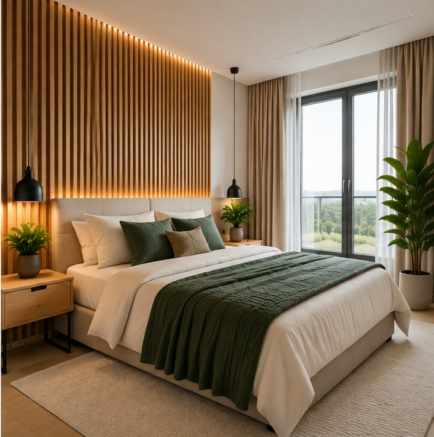

Remonty mieszkań
Odświeżanie i kompleksowe remonty mieszkań z dbałością o każdy szczegół.
USŁUGI REMONTOWO-WYKOŃCZENIOWE
Solidne remonty i wykończenia wnętrz w Darłowie i okolicach. Stawiamy na jakość, dokładność i terminową realizację.
Bezpłatna wycena Zobacz nasze realizacjeNASZA OFERTA
Kompleksowe usługi dopasowane do Twoich potrzeb i charakteru wnętrza.
Odświeżanie i kompleksowe remonty mieszkań z dbałością o każdy szczegół.
Przygotowanie wnętrz do zamieszkania, od prac podstawowych po ostatnie wykończenia.
Precyzyjne układanie płytek w łazienkach, kuchniach i innych pomieszczeniach.
Gładkie ściany i staranne malowanie, które nadają wnętrzom świeży wygląd.
Przemyślane zmiany funkcjonalne i modernizacja istniejących pomieszczeń.
Różnorodne prace remontowe dopasowane do zakresu i potrzeb projektu.
POZNAJ NAS
VALENBUD to firma remontowo-wykończeniowa, która stawia na rzetelność, dokładność i indywidualne podejście do każdego projektu.
Wiemy, że remont to ważna inwestycja. Dlatego dbamy o dobrą komunikację, staranne wykonanie prac i porządek na każdym etapie realizacji.
Porozmawiajmy o Twoim projekcie
NASZE REALIZACJE
Poznaj przykładowe realizacje i zobacz, jak dbamy o detale na każdym etapie prac.

Odświeżenie wnętrza i nowoczesne wykończenie.

Układanie płytek i staranne wykończenie detali.

Odświeżenie ścian i estetyczne wykończenie pomieszczeń.
MASZ PYTANIA?
Znajdź odpowiedzi na najważniejsze pytania dotyczące naszych usług.
Działamy w Darłowie i okolicach. Skontaktuj się z nami, aby omówić lokalizację projektu.
Skontaktuj się z nami, opisz zakres prac, a wspólnie ustalimy szczegóły wyceny.
Tak, zakres prac ustalamy indywidualnie, w zależności od potrzeb i charakteru projektu.
Termin ustalamy po omówieniu zakresu prac i dostępności.
Oczywiście. Możesz skontaktować się z nami, aby przedstawić swoje potrzeby i omówić możliwości.
SKONTAKTUJ SIĘ Z NAMI
Planujesz remont lub wykończenie wnętrza? Skontaktuj się z nami, aby omówić swój projekt i uzyskać indywidualną wycenę.
Jesteśmy dostępni, aby porozmawiać o Twoim projekcie i odpowiedzieć na pytania.
Darłowo i okolice